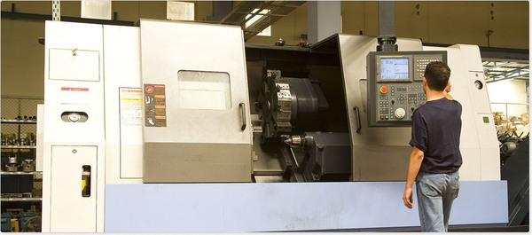

Complete listings of G code for various cnc mill/lathe machine controls. G code of multiple cnc controls are described with articles and programming examples.

G Code for CNC Dummies
Contents
- CNC Machine G Codes
- Fanuc G Codes
- Din 66025 G Codes
- Haas G Codes
- Siemens Sinumerik G Codes
- Anilam G Codes
- Bridgeport G Codes
- Centroid G Codes
- GSK 980TDb G Codes
- Heidenhain G Codes
- Hurco G Codes
- Hust G Codes
- LinuxCNC G Codes
- Mach3 G Codes
- Milltronics G codes
- Mitsubishi CNC G Codes
- Okuma G Codes
- Tormach G Codes
CNC Machine G Codes
- CNC Machine G Codes and M Codes – CNC Milling and Lathe
Fanuc G Codes
List of G-codes commonly found on Fanuc and similarly designed CNC controls.
G code listings with full G-code description and linked articles
- Fanuc G Code List (mill/lathe)
- Complete G Code List (lathe)
List of Fanuc Mill/Lathe G-codes
- Fanuc G-Code List
Din 66025 G Codes
DIN stands for “Deutsches Institut für Normung”, meaning “German institute for standardisation”.
- Din 66025 NC Programming Codes
Haas G Codes
- Haas CNC Lathe G-Codes
Siemens Sinumerik G Codes
- Siemens Sinumerik 808D Milling G Codes – ISO Dialect Programming
Anilam G Codes
- Anilam G Code List – CNC Mill 6000M
- Anilam G Codes – 4200T CNC Controls for Turning
Bridgeport G Codes
- Bridgeport G Code List – CNC Mill
Centroid G Codes
- Centroid G Code M-Series – CNC Mill
- Centroid CNC Lathe G Code Complete List
GSK 980TDb G Codes
- GSK 980TDb G Codes – Turning CNC System
Heidenhain G Codes
- Heidenhain ISO G Codes
Hurco G Codes
- Hurco Mill G Code List
- Hurco Lathe G Code List
Hust G Codes
- Hust CNC G Code List – CNC Mill H4M & H4CL-M
- Hust CNC Lathe Controller G Code List H4CL-T & H6C-T
LinuxCNC G Codes
- LinuxCNC G Code Reference
Mach3 G Codes
- Mach3 Mill G Code List
- Mach3 Turn G-Code List
Milltronics G codes
- Milltronics Centurion 7 G Code List
- Milltronics G Code List for Machining Centers
- Milltronics G Code for Lathes
Mitsubishi CNC G Codes
- Mitsubishi CNC G Codes – Machining Centers 700/70 Series
- Mitsubishi G Codes – CNC Lathe 700/70 Series
Okuma G Codes
- Okuma Mill G and M Codes
- Okuma Lathe G and M Codes
Tormach G Codes
- Tormach G code List
- Tormach Duality Lathe G Codes